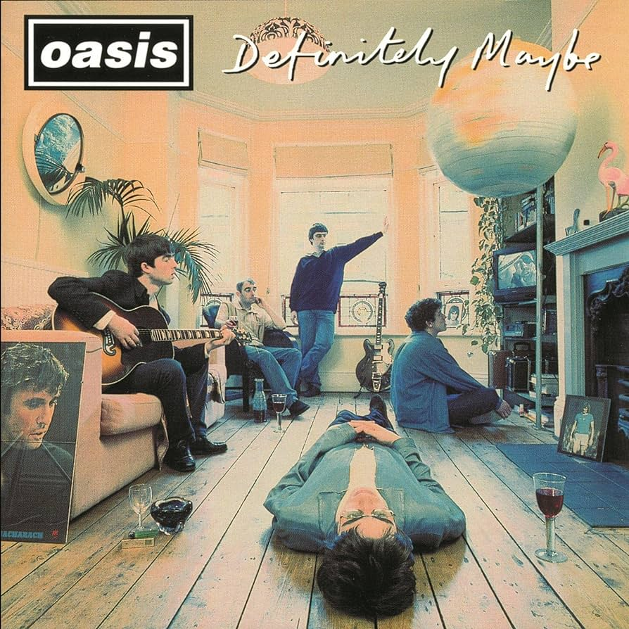
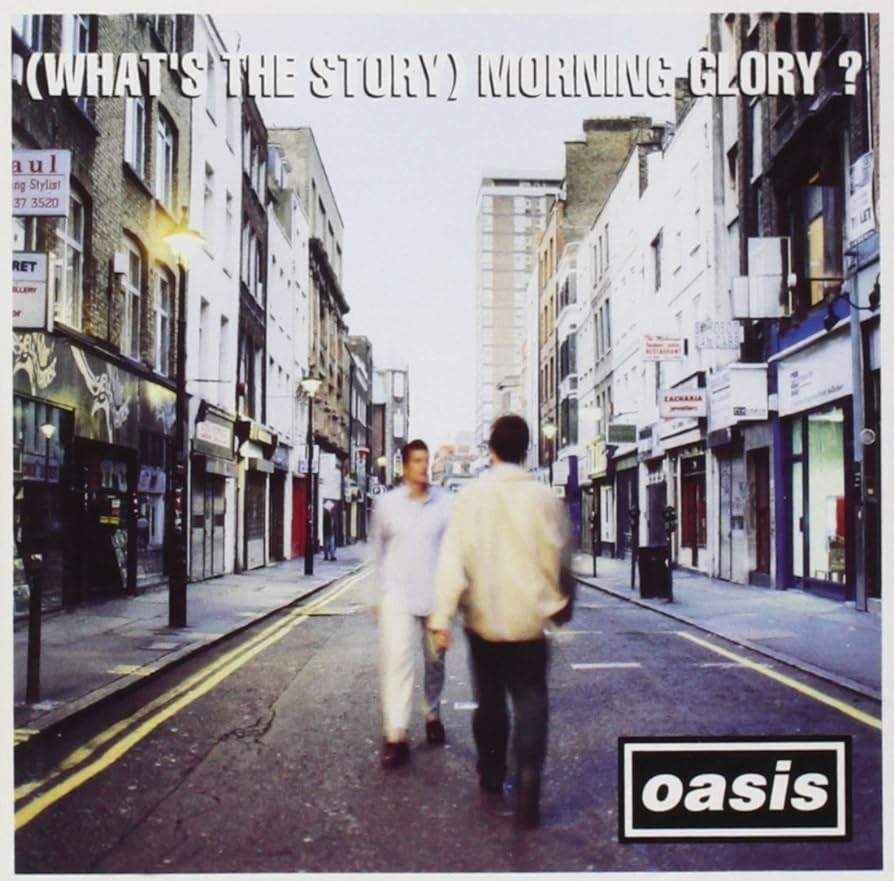
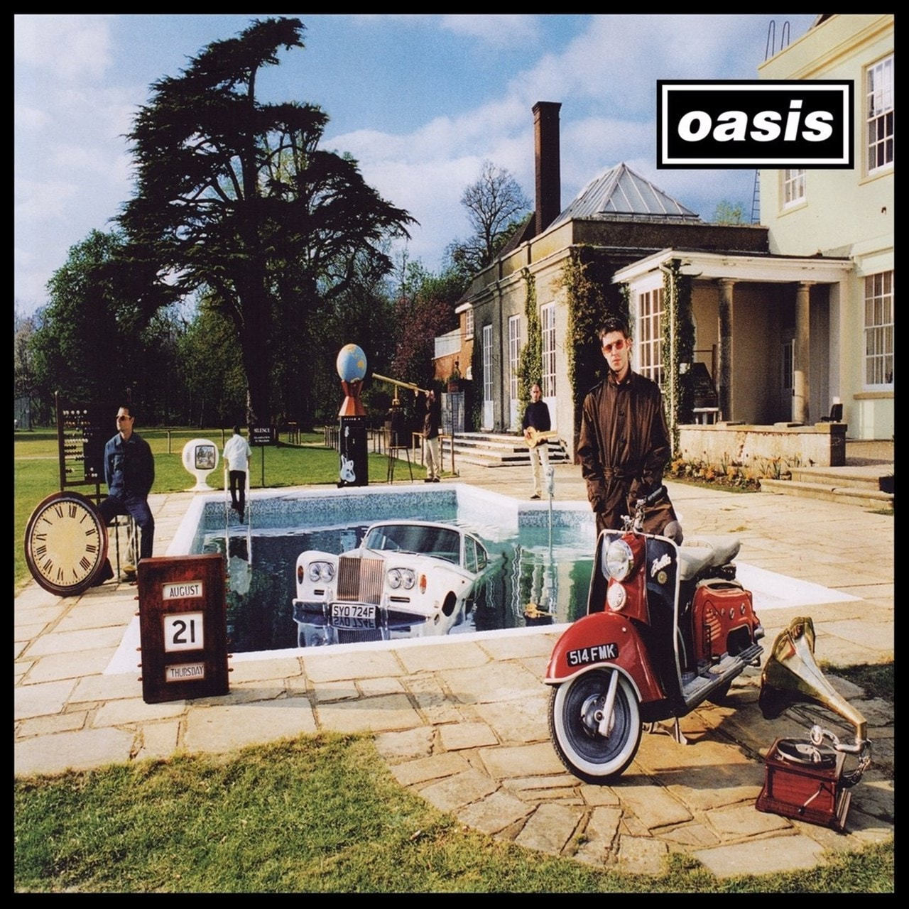

Definitely Maybe

Primer disco de Oasis, publicado el 29 de agosto de 1994. Tan pronto como septiembre alcanzó el nº1 de álbumes en Reino Unido.
A pesar de haber tenido muchas dificultades para grabar el álbum, no encontrando la mezcla que mejor iba con su estilo, fue un
gran éxito no solo en Reino Unido, sino también en Estados Unidos.
"Live Forever", "Cigarettes & Alcohol" y "Supersonic"
fueron de las canciones con más éxito.
(What's the Story) Morning Glory?

Segundo disco de Oasis, publicado el 2 de octubre de 1995. Fue su álbum más exitoso, posicionándolos en el nº1 de las listas de
muchos países. En este disco se encuentran las que probablemente son las dos canciones con mayor éxito de la banda, "Wonderwall"
y "Don't Look Back in Anger", cada una cantada por uno de los dos hermanos. Para cerrar el disco se encuentra la canción "Champagne
Supernova", personalmente una de mis favoritas.
Be Here Now

Terer disco de Oasis, publicado el 21 de agosto de 1997. Fue el inicio del fin de Oasis, no fue un disco malo, pero careció
de lo especial que tuvieron los dos primeros. Esto puede ser debido a que ya empezó a deteriorarse mucho la relacion entre
Noel y Liam, generando una dinámica negativa dentro del grupo.
La mejor canción fue "Stand By Me".